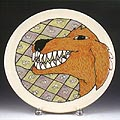

|
Dogs
Ceramic
artist Rimas VisGirda's Dog Life
Click an image to enlarge
In
1989 VisGirda had the opportunity to be an exchange artist with
the Soviet Arts Union and visited Moscow, St. Petersburg
and Vilnius, in his home country of Lithuania (then still part of
the Soviet Union). There VisGirda met relatives of his family and
became interested in his own background as a Lithuanian national.
Since then, VisGirda has developed the links to that country by
revisiting and attending various symposia. He also regularly exhibits
at the Lithuanian Museum (just outside of Chicago).
When
VisGirda's mother moved across the street from where he now lives
in Champaign, Illinois, the artist spotted another opportunity to
meld dog and ceramic. His mother's dog is a Cocker Spaniel named
Benny. Benny is a very friendly and excitable dog and is spoiled
rotten by VisGirda's mother, who also takes care of 3 feral sibling
cats named 'Form', 'Function', and 'Fiction'...
Now, VisGirda and his wife Billie have a Dalmatian named Dorothy.
They have had her for 14 years. Dorothy is much easier to incorporate
in ceramic work - VisGirda says it's fun and easy to make black
dots on a white background. The hard part is making the dots look
right - not real but 'right'. "It's like the difference between
Japanese and Chinese horse sculptures: Chinese horses are wonderful
in their anatomical correctness, whereas Japanese are all out of
proportion and there is no particular attention to a semblance of
reality - however when one looks at a Japanese horse, one gets a
wonderful feeling of 'horseness'. I would like my dog pieces to
have a similar feeling of 'dogness' - without having to rely on
physical proportion and anatomy", says VisGirda.
VisGirda
and his wife haven't got any children (yet) so he's tending to use
their pets as a source of imagery. They have Dorothy, the Dalmatian
and Fred, the Lovebird. Lately VisGirda has been thinking more about
relationships and commitments and things that matter to him especially
in terms of what he considers as 'family'. Conditions of repression
and later developments in the old Eastern Bloc have also been on
his mind. While VisGirda hasn't changed much stylistically in the
past ten years, his subject matter has become more personal and
emotional. Instead of being a detached observer, he is now incorporating
elements from his past and reworking them with the present.
VisGirda's work is represented in various galleries
in the USA.
Previous
Page > Boston Blackie, Dogs of Loucky
> Page 1
More Articles
|